Maat 2001
[12]:
import numpy as np
from matplotlib import pyplot as plt
import enlighten
import shapely
from scipy.interpolate import interp1d
from utils import Modulator_CPW
from imodulator.ChargeSimulator import ChargeSimulatorSolcore, ChargeSimulatorNN
from imodulator.OpticalSimulator import OpticalSimulatorFEMWELL, OpticalSimulatorMODE
from imodulator.ElectroOpticalSimulator import ElectroOpticalSimulator
from imodulator.RFSimulator import RFSimulatorFEMWELL as RFSimulator
import skrf as rf
import os
import json
%matplotlib inline
In this notebook we will replicate the absorption plots from [1], in particular Fig.3.2. To see details on the cross section and model build please look at the source code in the repo in the utils.py.
[1] D. H. P. Maat, InP-based integrated MZI switches for optical communication. 2001.
[22]:
modulator = Modulator_CPW()
modulator.device.plot_polygons()
plt.xlim(-20,20)
plt.ylim(-2,6)
plt.show()
c:\Users\20230622\AppData\Local\anaconda3\envs\imodulator_venv\lib\site-packages\pint\facets\numpy\numpy_func.py:322: RuntimeWarning: invalid value encountered in sqrt
result_magnitude = func(*stripped_args, **stripped_kwargs)
c:\Users\20230622\AppData\Local\anaconda3\envs\imodulator_venv\lib\site-packages\pint\facets\numpy\numpy_func.py:322: RuntimeWarning: overflow encountered in exp
result_magnitude = func(*stripped_args, **stripped_kwargs)
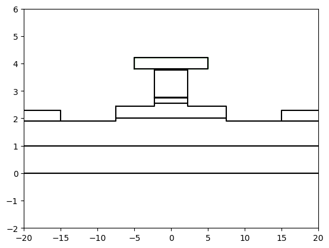
[14]:
a=shapely.LineString([
[0,0+0.001],
[0,modulator.h_L1 + modulator.h_L2+modulator.h_L3+modulator.h_L4+modulator.h_L5+modulator.h_L6-0.001]])
charge=ChargeSimulatorNN(
device=modulator.device,
simulation_line=a,
bias_start_stop_step=[0,20,21],
output_directory=r"output_nn"
)
charge.plot_with_simulation_line()
charge.NNinputf.execute(
show_log=False,
convergenceCheck=True,
convergence_check_mode="continue",
outputdirectory=r"C:\Users\20230622\OneDrive - TU Eindhoven\PhD\Reports and papers\16. Imodulator paper\Generic_InP\maat")
charge.load_output_data(folderpath=r"C:\Users\20230622\OneDrive - TU Eindhoven\PhD\Reports and papers\16. Imodulator paper\Generic_InP\maat\quicksave")
charge.plot_results(
V_idx = [0, 5, 20],
cmap = 'plasma',
plot_limits=True,
)
charge.transfer_results_to_device(
dx = 0.5,
polygons_to_map = ['L1', 'L2', 'L3', 'L4', 'L5', 'L6', 'etchstop'])
Charge transport will take place with:
L6
L5
etchstop
L4
L3
L2
L1
Input file created: output_nn\quicksave.in
c:\Users\20230622\AppData\Local\anaconda3\envs\imodulator_venv\lib\site-packages\nextnanopy\defaults.py:202: UserWarning: Unsupported products in config file: ['nextnano.NEGF++'] will be ignored. To not see this message, please remove unsupported products from the config file: C:\Users\20230622\.nextnanopy-configNote: nextnano.NEGF++ was renamed to nextnano.NEGF, nextnano.NEGF was renamed to nextnano.NEGF_classic. Please check the documentation for more details.
warnings.warn(
Simulation did not converge! Check the log:
C:\Users\20230622\OneDrive - TU Eindhoven\PhD\Reports and papers\16. Imodulator paper\Generic_InP\maat\quicksave\quicksave.log
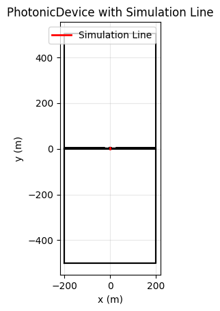
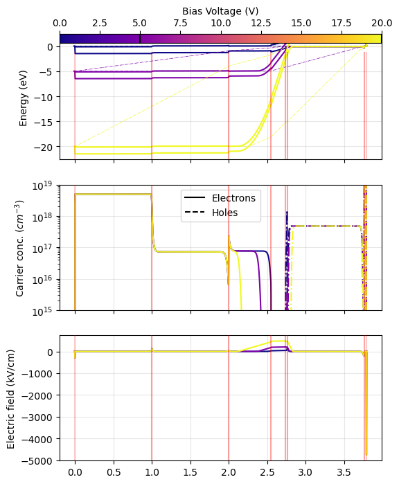
[15]:
mode = OpticalSimulatorFEMWELL(
device=modulator.device,
simulation_window=shapely.box(-6, -5, 6,8),
include_metals=True*0
)
mode.make_mesh(gmsh_algorithm=1)
mode.plot_mesh()
print(mode.mesh.nelements)
mode.plot_epsilon_optical()
15996
[15]:
(<Figure size 800x400 with 4 Axes>,
[<Axes: title={'center': '$\\epsilon_{xx}$ real part'}, xlabel='x (um)', ylabel='y (um)'>,
<Axes: title={'center': '$\\epsilon_{xx}$ imaginary part'}, xlabel='x (um)', ylabel='y (um)'>])
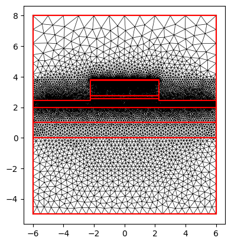
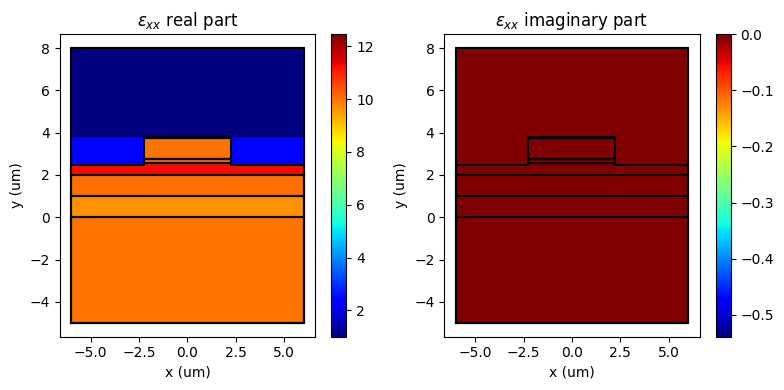
[16]:
modes = mode.compute_modes(
wavelength=1.55,
num_modes=5,
order=1,
metallic_boundaries=["top", "bottom", "left", "right"],
n_guess=3.4,
return_modes=True
)
for i in range(len(modes)):
print(f'Effective index - mode {i}: {modes[i].n_eff.real:.4f}')
print(f'loss - mode {i}: {modes[i].calculate_propagation_loss(1e4):.2f} dB/cm')
print(f"power: ", modes[i].calculate_power())
print(f"TE fraction: ", modes[i].te_fraction)
print(f"TM fraction: ", modes[i].tm_fraction)
print(f"transversality: {modes[i].transversality}")
print('#------------------------------------------#')
for m in modes:
mode.plot_mode(m)
Effective index - mode 0: 3.2698
loss - mode 0: 2.13 dB/cm
power: (0.9999999999999999+0j)
TE fraction: 0.9994622084957769
TM fraction: 0.0005377915042230619
transversality: 0.9979487968191524
#------------------------------------------#
Effective index - mode 1: 3.2645
loss - mode 1: 2.46 dB/cm
power: (1.0000000000000002+0j)
TE fraction: 0.000972453593002514
TM fraction: 0.9990275464069975
transversality: 0.973836891577347
#------------------------------------------#
Effective index - mode 2: 3.2588
loss - mode 2: 2.02 dB/cm
power: (0.9999999999999999+0j)
TE fraction: 0.9983397875966012
TM fraction: 0.001660212403398753
transversality: 0.9920078432065876
#------------------------------------------#
Effective index - mode 3: 3.2535
loss - mode 3: 2.38 dB/cm
power: (1.0000000000000002+0j)
TE fraction: 0.002083116727439847
TM fraction: 0.9979168832725601
transversality: 0.9735569676106849
#------------------------------------------#
Effective index - mode 4: 3.2411
loss - mode 4: 1.83 dB/cm
power: (0.9999999999999999+0j)
TE fraction: 0.99696424392834
TM fraction: 0.0030357560716599563
transversality: 0.9833366108639897
#------------------------------------------#
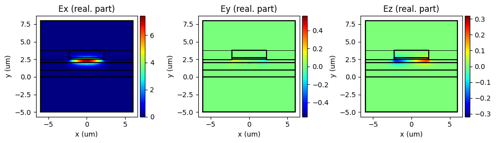
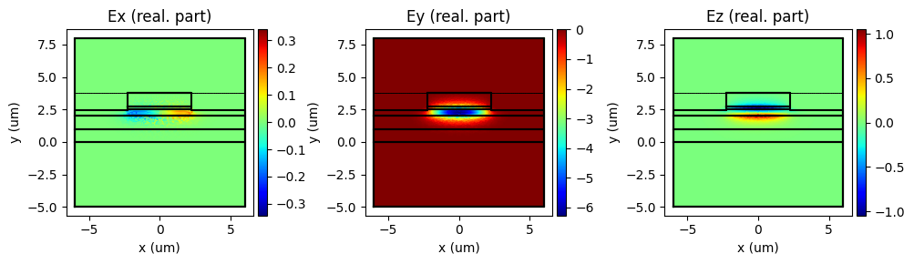
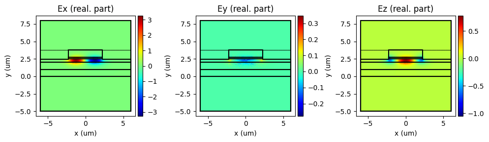
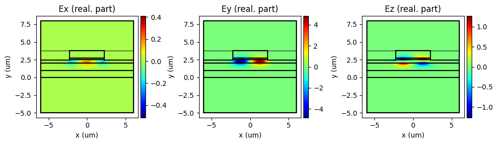
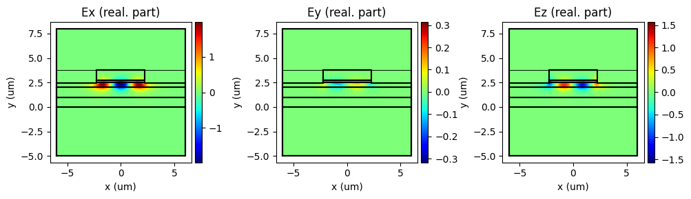
[17]:
mode.transfer_results_to_device(TE_TM_idx = [0,1])
[18]:
wl_vals = [1570,1555,1540,1525]
kappa_TE_vals = []
kappa_TM_vals = []
manager = enlighten.get_manager()
pbar = manager.counter(total=len(wl_vals), desc='Calculating EO response', unit='wavelength')
pbar_voltage = manager.counter(total=len(modulator.device.charge['V']), desc='Calculating EO response', unit='voltage index')
for wl in wl_vals:
EO=ElectroOpticalSimulator(
device=modulator.device,
simulation_window=shapely.box(
-modulator.w_metal_sig/2-modulator.metal_sep/2-2,
-1,
+modulator.w_metal_sig/2+modulator.metal_sep/2+2,
modulator.h_L1 + modulator.h_L2+modulator.h_L3+modulator.h_L4+modulator.h_L5+modulator.h_L6+1
),
wavelength=wl
)
EO.make_mesh()
# fig, ax = EO.plot_mesh()
# EO.plot_polygons(ax=ax)
print(EO.mesh.nelements)
EO.get_epsilon_optical()
kappa_all_TE = []
kappa_all_TM = []
voltage_idxs = np.arange(0, len(modulator.device.charge['V']), 1)
pbar_voltage.count=0
for i in range(len(modulator.device.charge['V'])):
kappa = EO.calculate_EO_response(
voltage_idx=i,
rot_x=0,
rot_y=np.pi/4,
rot_z=0,
base_epsilon_voltage_idx=0,
optical_mode_a='TE',
optical_mode_b='TE',
wavelength = wl/1e3
)
kappa_all_TE.append(kappa['InGaAsPElectroOpticalModel']['results'])
kappa = EO.calculate_EO_response(
voltage_idx=i,
rot_x=0,
rot_y=np.pi/4,
rot_z=0,
base_epsilon_voltage_idx=0,
optical_mode_a='TM',
optical_mode_b='TM',
wavelength = wl/1e3
)
kappa_all_TM.append(kappa['InGaAsPElectroOpticalModel']['results'])
pbar_voltage.update()
kappa_all_TE = np.array(kappa_all_TE)
kappa_all_TM = np.array(kappa_all_TM)
kappa_TE_vals.append(kappa_all_TE)
kappa_TM_vals.append(kappa_all_TM)
pbar.update()
13910
c:\Users\20230622\AppData\Local\anaconda3\envs\imodulator_venv\lib\site-packages\pint\facets\numpy\numpy_func.py:322: RuntimeWarning: invalid value encountered in log
result_magnitude = func(*stripped_args, **stripped_kwargs)
c:\Users\20230622\AppData\Local\anaconda3\envs\imodulator_venv\lib\site-packages\pint\facets\numpy\numpy_func.py:322: RuntimeWarning: invalid value encountered in sqrt
result_magnitude = func(*stripped_args, **stripped_kwargs)
c:\Users\20230622\AppData\Local\anaconda3\envs\imodulator_venv\lib\site-packages\pint\facets\numpy\numpy_func.py:322: RuntimeWarning: overflow encountered in exp
result_magnitude = func(*stripped_args, **stripped_kwargs)
c:\Users\20230622\AppData\Local\anaconda3\envs\imodulator_venv\lib\site-packages\pint\facets\plain\quantity.py:1271: RuntimeWarning: invalid value encountered in power
magnitude = new_self._magnitude**exponent
c:\Users\20230622\AppData\Local\anaconda3\envs\imodulator_venv\lib\site-packages\pint\facets\plain\quantity.py:1271: RuntimeWarning: invalid value encountered in sqrt
magnitude = new_self._magnitude**exponent
c:\Users\20230622\AppData\Local\anaconda3\envs\imodulator_venv\lib\site-packages\pint\facets\plain\quantity.py:1006: RuntimeWarning: divide by zero encountered in divide
magnitude = magnitude_op(new_self._magnitude, other._magnitude)
c:\Users\20230622\AppData\Local\anaconda3\envs\imodulator_venv\lib\site-packages\pint\facets\plain\quantity.py:1006: RuntimeWarning: invalid value encountered in divide
magnitude = magnitude_op(new_self._magnitude, other._magnitude)
c:\Users\20230622\AppData\Local\anaconda3\envs\imodulator_venv\lib\site-packages\pint\facets\numpy\numpy_func.py:322: RuntimeWarning: divide by zero encountered in log
result_magnitude = func(*stripped_args, **stripped_kwargs)
13910
c:\Users\20230622\AppData\Local\anaconda3\envs\imodulator_venv\lib\site-packages\pint\facets\numpy\numpy_func.py:322: RuntimeWarning: invalid value encountered in log
result_magnitude = func(*stripped_args, **stripped_kwargs)
c:\Users\20230622\AppData\Local\anaconda3\envs\imodulator_venv\lib\site-packages\pint\facets\numpy\numpy_func.py:322: RuntimeWarning: invalid value encountered in sqrt
result_magnitude = func(*stripped_args, **stripped_kwargs)
c:\Users\20230622\AppData\Local\anaconda3\envs\imodulator_venv\lib\site-packages\pint\facets\numpy\numpy_func.py:322: RuntimeWarning: overflow encountered in exp
result_magnitude = func(*stripped_args, **stripped_kwargs)
c:\Users\20230622\AppData\Local\anaconda3\envs\imodulator_venv\lib\site-packages\pint\facets\plain\quantity.py:1271: RuntimeWarning: invalid value encountered in power
magnitude = new_self._magnitude**exponent
c:\Users\20230622\AppData\Local\anaconda3\envs\imodulator_venv\lib\site-packages\pint\facets\plain\quantity.py:1271: RuntimeWarning: invalid value encountered in sqrt
magnitude = new_self._magnitude**exponent
c:\Users\20230622\AppData\Local\anaconda3\envs\imodulator_venv\lib\site-packages\pint\facets\plain\quantity.py:1006: RuntimeWarning: divide by zero encountered in divide
magnitude = magnitude_op(new_self._magnitude, other._magnitude)
c:\Users\20230622\AppData\Local\anaconda3\envs\imodulator_venv\lib\site-packages\pint\facets\plain\quantity.py:1006: RuntimeWarning: invalid value encountered in divide
magnitude = magnitude_op(new_self._magnitude, other._magnitude)
c:\Users\20230622\AppData\Local\anaconda3\envs\imodulator_venv\lib\site-packages\pint\facets\numpy\numpy_func.py:322: RuntimeWarning: divide by zero encountered in log
result_magnitude = func(*stripped_args, **stripped_kwargs)
13910
c:\Users\20230622\AppData\Local\anaconda3\envs\imodulator_venv\lib\site-packages\pint\facets\numpy\numpy_func.py:322: RuntimeWarning: invalid value encountered in log
result_magnitude = func(*stripped_args, **stripped_kwargs)
c:\Users\20230622\AppData\Local\anaconda3\envs\imodulator_venv\lib\site-packages\pint\facets\numpy\numpy_func.py:322: RuntimeWarning: invalid value encountered in sqrt
result_magnitude = func(*stripped_args, **stripped_kwargs)
c:\Users\20230622\AppData\Local\anaconda3\envs\imodulator_venv\lib\site-packages\pint\facets\numpy\numpy_func.py:322: RuntimeWarning: overflow encountered in exp
result_magnitude = func(*stripped_args, **stripped_kwargs)
c:\Users\20230622\AppData\Local\anaconda3\envs\imodulator_venv\lib\site-packages\pint\facets\plain\quantity.py:1271: RuntimeWarning: invalid value encountered in power
magnitude = new_self._magnitude**exponent
c:\Users\20230622\AppData\Local\anaconda3\envs\imodulator_venv\lib\site-packages\pint\facets\plain\quantity.py:1271: RuntimeWarning: invalid value encountered in sqrt
magnitude = new_self._magnitude**exponent
c:\Users\20230622\AppData\Local\anaconda3\envs\imodulator_venv\lib\site-packages\pint\facets\plain\quantity.py:1006: RuntimeWarning: divide by zero encountered in divide
magnitude = magnitude_op(new_self._magnitude, other._magnitude)
c:\Users\20230622\AppData\Local\anaconda3\envs\imodulator_venv\lib\site-packages\pint\facets\plain\quantity.py:1006: RuntimeWarning: invalid value encountered in divide
magnitude = magnitude_op(new_self._magnitude, other._magnitude)
c:\Users\20230622\AppData\Local\anaconda3\envs\imodulator_venv\lib\site-packages\pint\facets\numpy\numpy_func.py:322: RuntimeWarning: divide by zero encountered in log
result_magnitude = func(*stripped_args, **stripped_kwargs)
13910
c:\Users\20230622\AppData\Local\anaconda3\envs\imodulator_venv\lib\site-packages\pint\facets\numpy\numpy_func.py:322: RuntimeWarning: invalid value encountered in log
result_magnitude = func(*stripped_args, **stripped_kwargs)
c:\Users\20230622\AppData\Local\anaconda3\envs\imodulator_venv\lib\site-packages\pint\facets\numpy\numpy_func.py:322: RuntimeWarning: invalid value encountered in sqrt
result_magnitude = func(*stripped_args, **stripped_kwargs)
c:\Users\20230622\AppData\Local\anaconda3\envs\imodulator_venv\lib\site-packages\pint\facets\numpy\numpy_func.py:322: RuntimeWarning: overflow encountered in exp
result_magnitude = func(*stripped_args, **stripped_kwargs)
c:\Users\20230622\AppData\Local\anaconda3\envs\imodulator_venv\lib\site-packages\pint\facets\plain\quantity.py:1271: RuntimeWarning: invalid value encountered in power
magnitude = new_self._magnitude**exponent
c:\Users\20230622\AppData\Local\anaconda3\envs\imodulator_venv\lib\site-packages\pint\facets\plain\quantity.py:1271: RuntimeWarning: invalid value encountered in sqrt
magnitude = new_self._magnitude**exponent
c:\Users\20230622\AppData\Local\anaconda3\envs\imodulator_venv\lib\site-packages\pint\facets\plain\quantity.py:1006: RuntimeWarning: divide by zero encountered in divide
magnitude = magnitude_op(new_self._magnitude, other._magnitude)
c:\Users\20230622\AppData\Local\anaconda3\envs\imodulator_venv\lib\site-packages\pint\facets\plain\quantity.py:1006: RuntimeWarning: invalid value encountered in divide
magnitude = magnitude_op(new_self._magnitude, other._magnitude)
c:\Users\20230622\AppData\Local\anaconda3\envs\imodulator_venv\lib\site-packages\pint\facets\numpy\numpy_func.py:322: RuntimeWarning: divide by zero encountered in log
result_magnitude = func(*stripped_args, **stripped_kwargs)
[19]:
np.save(
'kappa_vals.npy',
{
'wl_vals': wl_vals,
'V': charge.V,
'kappa_TE_vals': kappa_TE_vals,
'kappa_TM_vals': kappa_TM_vals
}
)
[20]:
def f(x,A,B,C,D, E):
return A+B*x + C*x**2 + D*x**3 + E*x**4
from scipy.optimize import curve_fit
data_maat = np.genfromtxt(
r'.\maat_data_all_new.csv',
delimiter=',',
skip_header=0,
dtype=float,
filling_values=np.nan,
)
fig = plt.figure(figsize=(8,3))
gs = fig.add_gridspec(1,2)
ax_TE = fig.add_subplot(gs[0,0])
ax_TM = fig.add_subplot(gs[0,1])
colors = ['r', 'g', 'b', 'k']
idxs = [0,1,2,3]
for i,idx in enumerate(idxs):
ax_TE.plot(
data_maat[:,2*idx],
data_maat[:,2*idx+1],
color=colors[i],
label=f'WL = {wl_vals[i]} nm - Maat',
marker='x',
linestyle='None'
)
V = modulator.device.charge['V']
alpha_TE = -4.343*np.sum(kappa_TE_vals[i], axis=1).imag*1e-3
ax_TE.plot(
V,
alpha_TE,
color=colors[i],
marker='o',
label=f'WL = {wl_vals[i]} nm - Simulated'
)
idxs = [0,1,2,3]
for i,idx in enumerate(idxs):
ax_TM.plot(
data_maat[:,2*4+2*idx],
data_maat[:,2*4+2*idx+1],
color=colors[i],
label=f'WL = {wl_vals[i]} nm',
marker='x',
linestyle='None'
)
V = modulator.device.charge['V']
alpha_TM = -4.343*np.sum(kappa_TM_vals[i], axis=1).imag*1e-3
ax_TM.plot(
V,
alpha_TM,
color=colors[i],
marker='o',
label=f'WL = {wl_vals[i]} nm - Simulated'
)
ax_TE.set_ylim(-30,1)
ax_TM.set_ylim(-30,1)
ax_TE.set_xlabel('Voltage (V)')
ax_TM.set_xlabel('Voltage (V)')
ax_TE.set_ylabel('Attenuation (dB)')
ax_TM.set_ylabel('Attenuation (dB)')
ax_TE.set_title('TE mode')
ax_TM.set_title('TM mode')
ax_TE.legend(frameon=False, loc='lower left', fontsize=8)
# ax_TM.legend(frameon=False, loc='lower left', fontsize=8)
fig.tight_layout()
fig.savefig('EO_simulation.png', dpi=300)
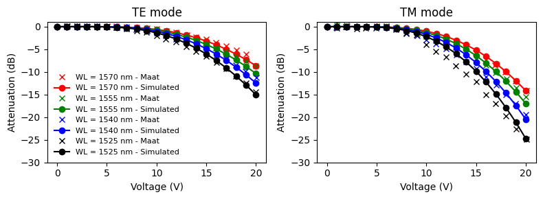